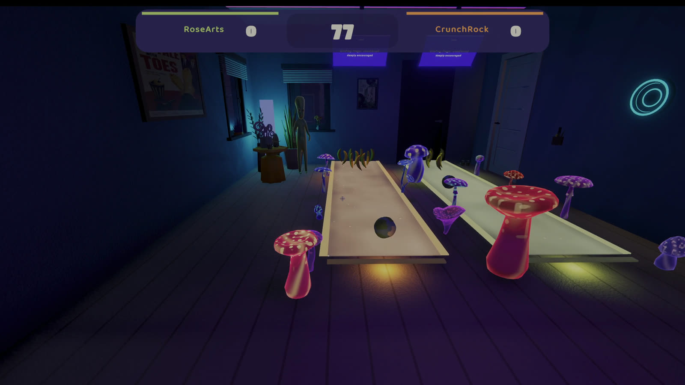
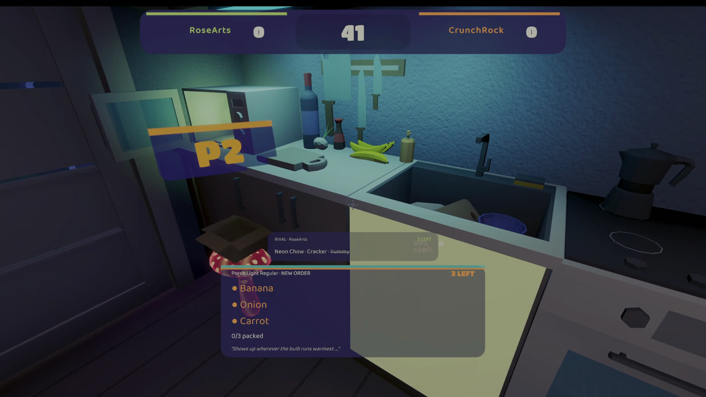

Monkey
Bowls
Banana pins. Maximum judgment.
Your friend is the difficulty setting.
Wishlist on SteamFree demo. Two players. One couch or two Steam seats.
Three games in the demo. Rounds are short, the rematch is instant, and betrayal is the mechanic.

Banana pins. Maximum judgment.

Shrink. Jump. Steal their island.

Steal the order. Pack the box.
Early Access adds Mecha Chameleon, Snack Heist and Gun Box Gallery, a bigger house, and four players.
The jar wants a litre of you. It isn't fussy about whose.
No points race. Every win pours loosh into one shared litre. When it brims the night ends — and the room has been warping the whole time you weren't looking.